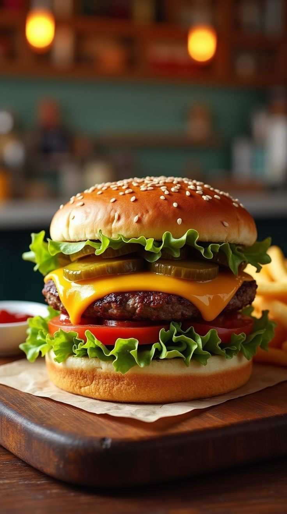

Nossos Produtos:
- Hambúrguer Clássico: Pão, carne, queijo e salada;
- Cheddar Bacon: Pão, carne, cheddar derretido e bacon crocante;
- Veggie Burger: Hambúrguer vegetariano com molho especial.
Nossos Hambúrgueres:
-
Clássico Bacon: Pão, carne, queijo e bacon crocante;
-
Veggie Fresh: Hambúrguer de grão-de-bico, alface e molho especial;
-
Duplo Cheddar: Duas carnes suculentas e muito cheddar.
Acompanhamento e Produtos Extras:
- Batata Frita Tradicional;
- Batata Rústica com Ervas;
- Anéis de Cebolas;
- Molhos Especiais.
Bebidas:
- Refrigerante;
- Suco Natural;
- Milk-Shakes;
- Água Mineral.
